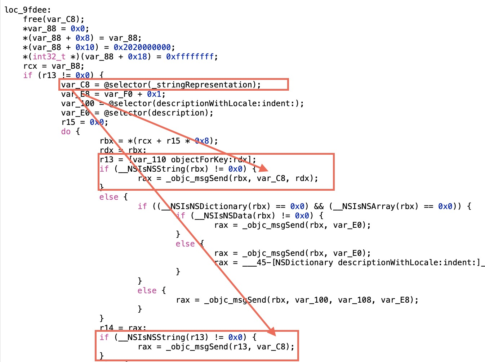
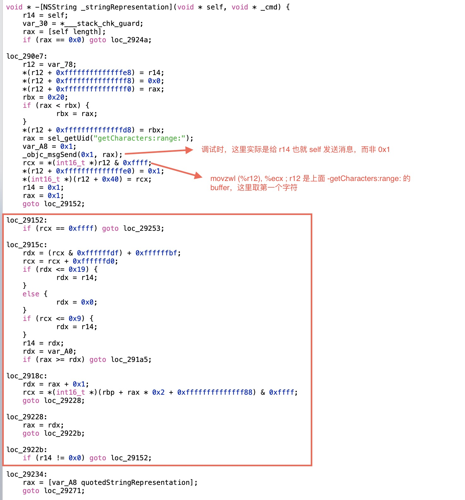

在通过 NSLog 输出 NSDictionary 的键值对时，会发现有些 key 会被双引号括住。我是从来没留意过这个细节，直到今天有同事问我为什么。
来一个简单的测试：
NSDictionary *dict = @{
@"appKey":@"g37",
@"server_id":@"10023",
@"role_id":@"402932839"
};
NSLog(@"%@", dict);console 输出：
{
appKey = g37;
"role_id" = 402932839;
"server_id" = 10023;
} 啊哈。
-description Method通过符号断点 -[NSDictionary description] 很容易发现实际的拼接逻辑实现是在 -[NSDictionary descriptionWithLocale:indent:]，瞧了一眼指令过多，打算让 Hopper 去完成翻译工作。通过 image list CoreFoundation 找到 binary 的路径把它扔进去。

可见，当 key 或者 value 是NSString类型的时候，使用的是-[NSString _stringRepresentation]的返回值作为输出字符串。接下来的关注点就取到了NSString的这个私有方法上了。可以看到里面的 je, jbe, jne 等跳转指令实在太多了，偷懒继续用 Hopper 分析：

其中有些逻辑的生成比较诡异，和原本的反汇编指令初入较大，比如上图所发送-getCharacters:range:消息的时候，翻译了个错误的消息接受者。下面红框框住的那段循环比较重要，有上面可以知道 rcx 获得了第一个Unichar，在循环里面不断地遍历这个 buffer，通过一段计算逻辑和判断改变 r14 的值，然后再最后判断 r14 是否为 0（不为零则跳转 loc_29234 执行-[NSString quotedStringRepresentation]）。
看下 loc_2915c 中运算可能不那么直观， 使用 ASCII 的字符集作为 buffer 跑一下：
for (UniChar rcx = 0; rcx < 256; rcx++) {
UniChar rdx = (rcx & 0xffffffdf) + 0xffffffbf;
UniChar crcx = rcx + 0xffffffd0;
if (rdx <= 0x19) {
rdx = 0x1;
} else {
rdx = 0x0;
}
if (rcx <= 0x9) {
rdx = 0x1;
}
// printf("char [%c] rdx: %2x , rcx: %2x\n", rcx, rdx, crcx);
printf("char [%c] let r14 be %d\n", rcx, rdx);
}运行一遍之后结果不言而喻，如果字符串含有非字母表的字符（a-z & A-Z），会使得的 r14 修改为 0 并走到使用引号字符串的逻辑。这里的说法也不是很严谨，可以看到上面代码的输出，对于前面的部分不可见字符也会使得 r14 为 1 的。
发现了个无用的冷知识，但是 so 上早有提问点明一切，还是 duplicated，害。
— Jun 10, 2020